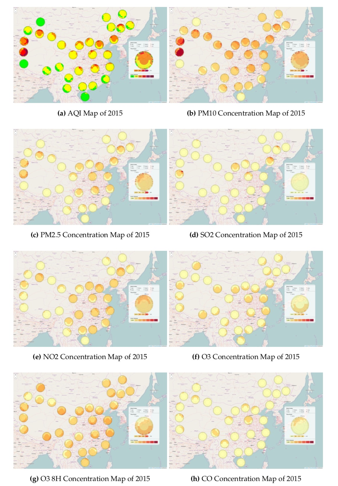

中国空气质量数据来源与可视化案例
上一篇博文介绍了中国空气质量数据概貌，这篇主要介绍空气质量数据的几个来源以及一个小的可视化案例，仅仅供参考。
1 数据来源
据我所知，中国空气质量数据有两个主要的来源。一个就是PM25.in，提供实时数据接口，声称自己数据来源于环境保护部，大家可以自己对比验证，笔者对比过几次，发现数据是一致的。有网友提供了PM25.in的历史数据，请参见全国空气质量历史数据。另一个是环保部实时发布空气质量数据的平台（ http://106.37.208.233:20035 ），该平台是Silverlight开发的，只有安装Silverlight插件才可以访问，但是网站提供了数据接口，其中有一个提供所有站点的实时数据，如下http://106.37.208.233:20035/emcpublish/ClientBin/Env-CnemcPublish-RiaServices-EnvCnemcPublishDomainService.svc/binary/GetAQIDataPublishLives
通过该接口可以获得实时的空气质量数据，得到的结果是一个WCF二进制的数据文件，这种二进制文件格式的标准是公开的，可以写程序解析，也有相关的开源程序（如python-wcfbin）可以用来解析该数据并输出文本格式的XML数据。我个人建立的一个实时空气质量地图（参见中国实时空气质量地图）就是每个小时定时获取该接口的数据两次，然后转换格式后在地图上显示。
图1 中国实时空气质量地图(2018年1月16日20时)
2 可视化案例
基于一段时间积累的数据，做了一个可视化的案例，见论文 An Interactive Web Mapping Visualization of Urban Air Quality Monitoring Data of China。主要的想法是将全国全年的日值空气质量数据制作专题地图，并通过地图的交互以及对地图符号的交互实现多空间尺度下，不同时间粒度的信息可视化。按照时间的年、季度、月份、日的结构粒度分割，设计了如图2的时间信息编码的地图符号，每个城市对应一个地图符号，每个符号上编码了全年的日值数据，点击每个时间区域，符号可以缩放，得到不同时间粒度下的符号表达。该符号是基于D3.js和Leaflet.js开发实现，由D3.js进行数据驱动的符号绘制，Leaflet.js则负责空间信息的加载，符号的定位，符号的冲突处理（这里使用Rbush.js进行地图缩放时的符号冲突处理）。每个符号对应的城市被划分一定的等级，按照等级确定冲突产生时符号的选择优先权。此案例之前在线发布过，由于主机的迁移暂时不可用，新的在线的可视化案例未来将会在中国实时空气质量地图上另辟栏目进行展示。静态组图如图3.
图2 时间信息编码符号
图3 一组空气质量分量地图

相关参考
[1] GEOINSIGHTS. 中国空气质量(AQI)全图(2014~2017).GeoInsights, 2018.
[2] Wei Lu, Tinghua Ai, Xiang Zhang and Yakun He. An Interactive Web Mapping Visualization of Urban Air Quality Monitoring Data of China[J]. Atmosphere, 2017, 8(8): 148.
[3] Bostock, M. D3.js-Data-Driven Documents.
[4] Agafonkin, V. Leaflet-a JavaScript library for interactive maps.
[5] Agafonkin, V. RBush-a high-performance JavaScript R-tree-based 2D spatial index for points and rectangles.